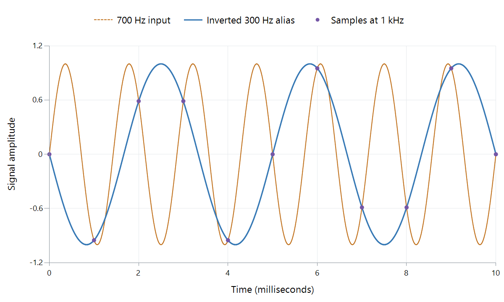

Audio Sample Rate
| Sample rate | Samples per channel in one second | Time between samples | Nyquist frequency |
|---|---|---|---|
| 8 kHz | 8,000 | 125 microseconds | 4 kHz |
| 44.1 kHz | 44,100 | 22.68 microseconds | 22.05 kHz |
| 48 kHz | 48,000 | 20.83 microseconds | 24 kHz |
| 96 kHz | 96,000 | 10.42 microseconds | 48 kHz |
Sample rate sets the audio time grid. The interval is 1 divided by the rate. Every channel has the full grid: a 48 kHz six-channel track has 48,000 sample positions per second in each of its six channels.
For a sine wave, the number of sample intervals per cycle is sample rate divided by frequency. At 48 kHz, a 1 kHz tone has 48 intervals per cycle; a 10 kHz tone has 4.8. That fractional result is normal: the tone need not complete an integer number of cycles between sample positions.
Why half the rate matters
The Nyquist frequency is half the sampling rate. For ordinary audio around zero frequency, ideal reconstruction needs the signal's frequency content restricted below that boundary. The significance is ambiguity, not a rule that high-frequency sound needs a prettier staircase.

Calculated example at a deliberately low 1 kHz rate: a 700 Hz sine and an inverted 300 Hz sine give identical samples. The continuous curves differ; the measured dots do not.
At sample index n, the first signal is sin(2π × 700 × n/1,000). The second is −sin(2π × 300 × n/1,000). Their phases differ by whole cycles at these instants, giving the same values:
| Sample index | Time | Either sampled amplitude |
|---|---|---|
| 0 | 0 ms | 0 |
| 1 | 1 ms | About −0.951 |
| 2 | 2 ms | About +0.588 |
| 3 | 3 ms | About +0.588 |
A receiver given only that sequence cannot decide which original sine existed. Recording systems filter before sampling to prevent such ambiguity. Practical filters also require a transition band, so the Nyquist number is an ideal boundary rather than a guaranteed flat recording bandwidth.
The rate also gives the samples their duration
44,100 sample frames played at 44,100 per second last one second. Played at 48,000 per second, those same frames last 0.91875 seconds, with every frequency multiplied by 48,000/44,100.
That is what changing the declared rate without resampling does: it changes speed and pitch. Proper resampling instead calculates 48,000 values for the same one-second signal, preserving its intended timeline.
Read an output rate in the right place
A 48 kHz output can carry music originally stored at 44.1 kHz after conversion, or an encoded low-bandwidth voice recording decoded onto that grid. The output rate identifies how fast values are presented, not the frequencies the source actually contains.
For an Emby audio report, use the rate to interpret duration, decoder configuration, and conversion. Use bitrate for compressed data demand and bit depth for PCM amplitude precision. Together they describe different parts of the representation.